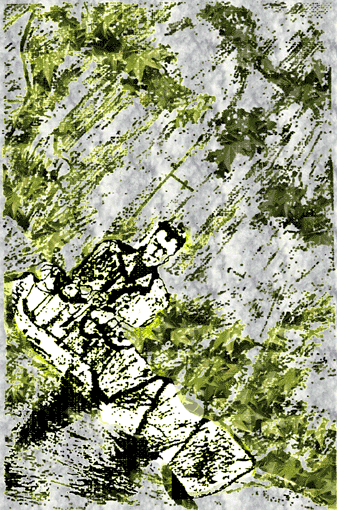

 |
|
TIRANO (O el Síndrome de Fúbol2) El dictador apuró el último apunte y observó la esbelta copa. A sus rodillas una espora desmenuzaba expertamente con su mirada el fondo de la estancia y sorbía ruidosamente las últimas gotas de su anís del mono. Escurriéndola sobre la cabeza de la bella espora se relajó tanto que un orondo, casi bonachón cuesquillo emanó de las profundidades de su supuesta vía uretral. La musa, apercibida del cotidiano suceso no pudo por menos que ponerse a aplaudir sonoramente: "¿La felicidad, mi excelencia?", preguntó, divertida; "Amada Amada", le espetó el tirano, "nada hay en este mundo mejor que un buen pedo en las narices de la zorra con la que compartes cada noche la cama...". "Pero... mi excelencia... ¿no exageráis?", clamó la desconcertada Amada. Y entonces el horrible y grosero cacique enrojeciendo de vergüenza al reconocer su pérfida acción echó a correr y se dispuso a ver Estudio Estadio. |